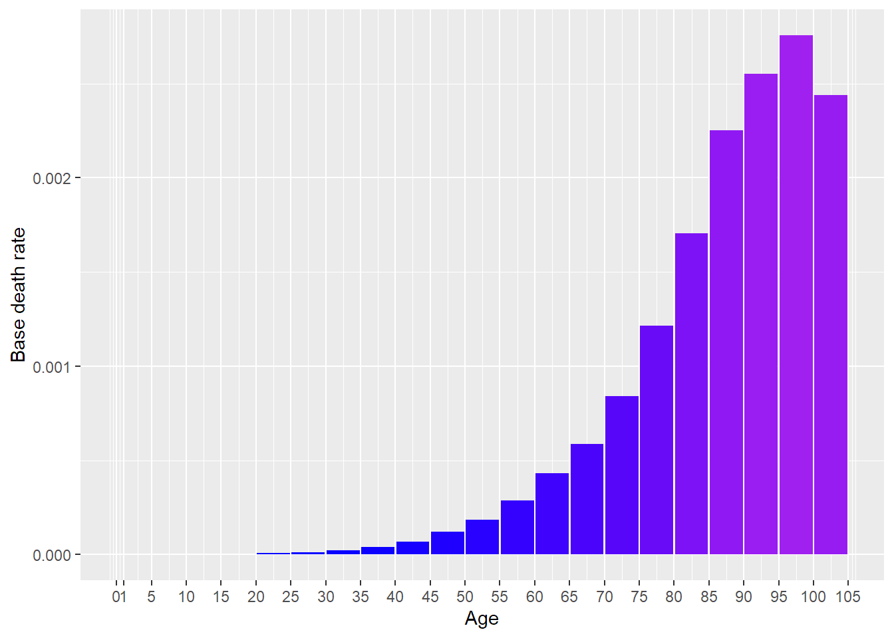
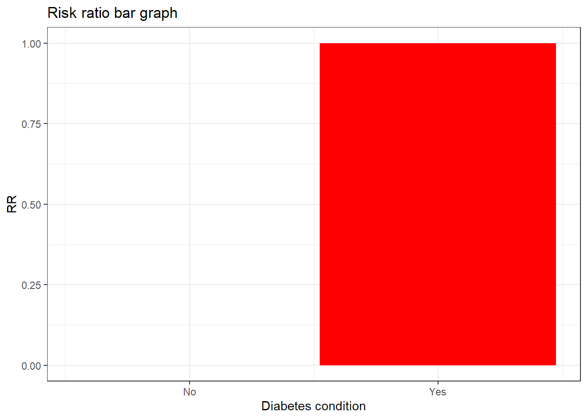

[auto-generated file]
Diabetes is a death cause. It means that there is a certain probability that one dies from this.
Categories
Diabetes is part of the following death cause categories
Risk factors
In the model Diabetes has the following risk factors
Number of deaths
In 2014 Diabetes was responsible for 2.91% of the deaths in the US. Below is a plot of how prevalent the death was for different ages (Xu et al. 2016)

Definition
The definition of dying from Diabetes is to get any of the following ICD codes as the main cause of death on one’s death certificate. The percentage is the proportion of the deaths from Diabetes who falls under the ICD code
E10: Type 1 diabetes mellitus (4.8%)
- E100 (0.03%)
- E101: Type 1 diabetes mellitus with ketoacidosis (0.31%)
- E102: Type 1 diabetes mellitus with kidney complications (1.4%)
- E103: Type 1 diabetes mellitus with ophthalmic complications (0.0026%)
- E104: Type 1 diabetes mellitus with neurological complications (0.051%)
- E105: Type 1 diabetes mellitus with circulatory complications (0.2%)
- E106: Type 1 diabetes mellitus with other specified complications (0.018%)
- E107 (0.35%)
- E109: Type 1 diabetes mellitus without complications (2.5%)
E11: Type 2 diabetes mellitus (27.0%)
- E110: Type 2 diabetes mellitus with hyperosmolarity (0.065%)
- E111 (0.21%)
- E112: Type 2 diabetes mellitus with kidney complications (9.0%)
- E113: Type 2 diabetes mellitus with ophthalmic complications (0.0039%)
- E114: Type 2 diabetes mellitus with neurological complications (0.19%)
- E115: Type 2 diabetes mellitus with circulatory complications (1.4%)
- E116: Type 2 diabetes mellitus with other specified complications (0.23%)
- E117 (1.4%)
- E119: Type 2 diabetes mellitus without complications (15.0%)
E12 (0.038%)
- E122 (0.0091%)
- E125 (0.0026%)
- E127 (0.0013%)
- E129 (0.025%)
E13: Other specified diabetes mellitus (0.0039%)
- E132: Other specified diabetes mellitus with kidney complications (0.0026%)
- E137 (0.0013%)
E14 (68.0%)
- E140 (0.24%)
- E141 (2.9%)
- E142 (19.0%)
- E143 (0.0078%)
- E144 (0.27%)
- E145 (3.0%)
- E146 (0.4%)
- E147 (2.9%)
- E149 (39.0%)
Source: Xu et al. (2016), (“ICD Order Files 2014,” n.d.)
Interaction
The combined risk ratio of all risk factors is computed using the formula
\[
RR=RR_{\text{Diabetes}}
\]
The normalization factor is based on the joint distribution of all the risk factors and is computed using the formula
\[
P=P_{\text{Diabetes}}
\]
Diabetes condition
Diabetes condition is a risk factor for Diabetes.
Below is a plot of the risk ratios we have taken from the literature alterated to fit our model

References
Xu, Jiaquan, Kenneth D Kochanek, Sherry L Murphy, and Betzaida Tejada-Vera. 2016. “Deaths: Final Data for 2014.” National Vital Statistics Reports 65 (4).